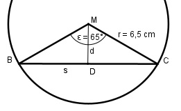

Aufgabe 54 Wie groß ist die Länge s der Sehne und deren Abstand d vom Mittelpunkt.

Im Dreieck BDM: s/2 sin α/2 = ------ |*r r s/2 = sin α/2 * r | *2 s = 2 * sin α/2 * r = 2 * 0,5373 * 6,5 cm = 7 cm d cos α/2 = --- |*r r d = cos α/2 * r = 0,8434 * 6,5 cm = 5,5 cm